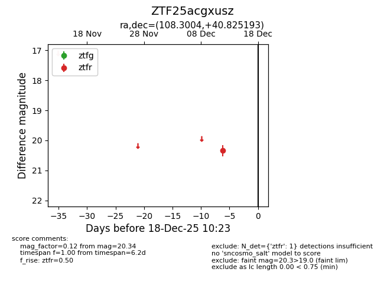
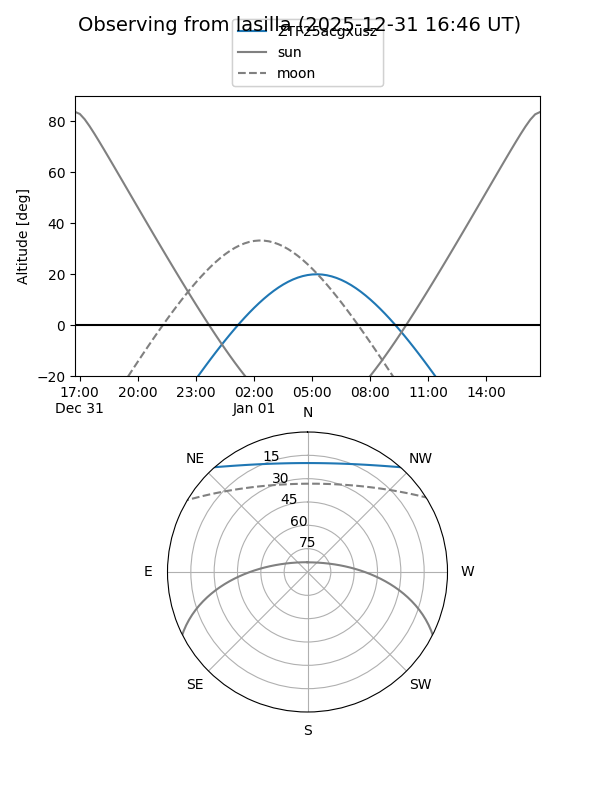
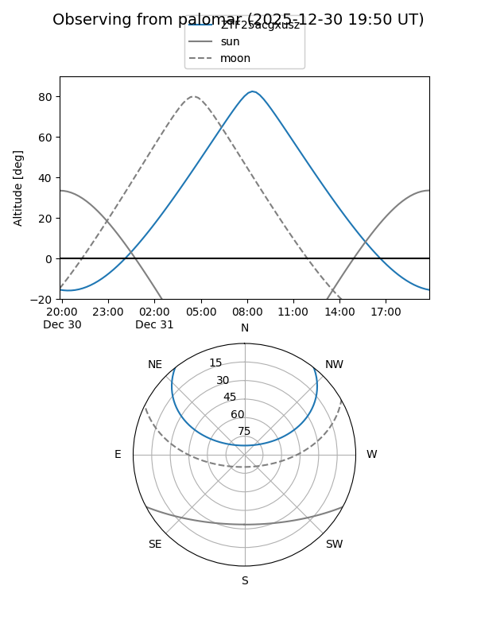

ZTF25acgxusz
Target ZTF25acgxusz at 2025-12-31 18:00
Aliases and brokers:
FINK: link
Lasair: link
ALeRCE: link
alt names
ZTF25acgxusz (ztf,fink_ztf)
Coordinates:
equatorial (ra, dec) = 108.3004,+40.82519
equatorial (HMS+DMS) = 07:13:12.09,+40:49:30.70
galactic (l, b) = (176.8418,+21.22047)
Flags:
Photometry:
last ztfr=20.34
1 ztfr detections
Lightcurve

Visibility


Additional plots